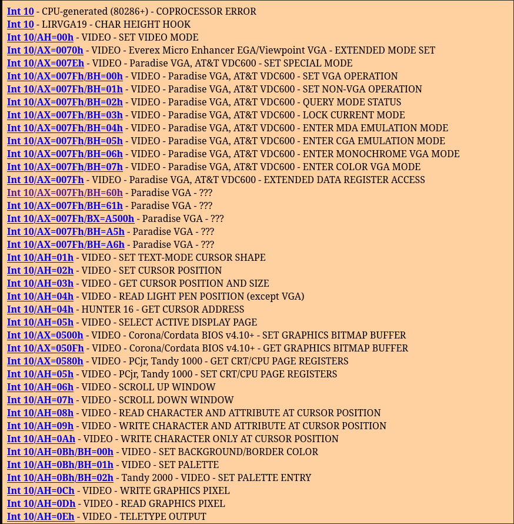
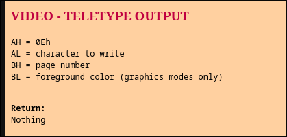
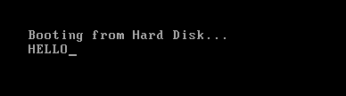
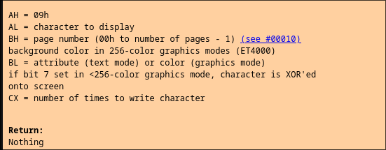
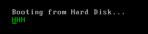
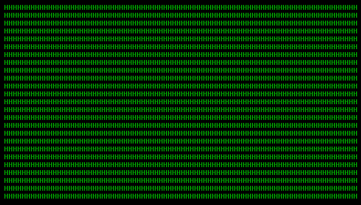
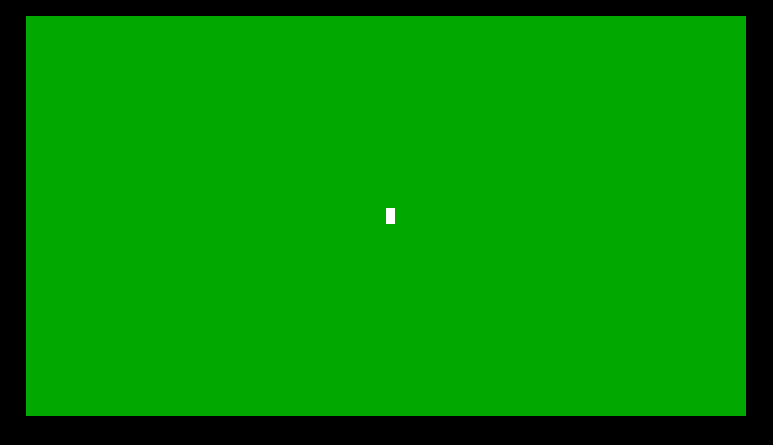
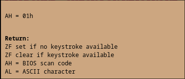
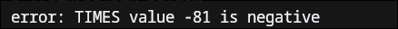

So a while back I started reading about Operting Systems using the lovely free book called OSTEP
Well naturally then I wanted to take a shot at writing my own OS. So thus began the adventure.
I will spare you the details of how the bootloader works, but the reason why it exists is because when your computer gets powered on, after testing all its components (called POST), it enters the Basic Input Output System mode. Now it needs to load the operating system. But the hardware does not know where it is located in the memory.
This job finding and loading the OS is given to a tiny (and I mean do mean tiny) program called the Bootloader. It exists at the first sector of your storage, also called the bootsector.
It is a whopping 512 bytes long. Jeez what bloat!
All of the bootloader code must fit within these bytes. Well it doesn't really need to be big, because what its supposed to do can be achieved in just a couple of lines of assembly code
In this post, I will just be going through what I did and how it all turned out. I will be programming the classic snake game, although not really making the complete version of it for the reasons I'll soon explain. I will be sharing a bit of assembly too, but I'll try to explain most of it
Well turns out, lots of things (its an IO system afterall). You can draw things, take in input. Well thats about it lol
But the way you program is somewhat similar to programming Assembly while in the OS. There are interrupts, and obviously the assembly language itself with its stack and registers.
Speaking of interrupts, it would be a crime (okay maybe not a crime per-se but you get the point) to fail to mention Ralf Brown's Interrupt List
This website will be your best friend when trying to program the BIOS. The reason it's so big is because companies when making their BIOS did not really agree on a standard. Thus we have so many different interrupts aaaaa\
Now I told you that the program must fit in 512 bytes. I lied. I'm sorry
Okay I lied again. It technically is 512 bytes. But the last two bytes are reserved for a magic number 0xaa55. So you're raelly left with 510 bytes to work with.
Now the most basic bootloader is the one that simply exists. But thats no fun.
So here I state with no proof: The most basic bootloader is one which loops forever.
This won't really be controversial I believe, because almost all "making your own OS" resources do make the infinitly looping bootloader as one of the first things.
Doing this is pretty simple:
loop:
jmp loop
times 510-($-$$) db 0; fills the remainaing space with 0, except for the last two bytes
dw 0xaa55
The assembly is not that scary. It creates a label called loop, and just keeps jumping to it, running the same jump instruction again and again and again...you get the point.
The times 510-($-$$) db 0; simply fills the remaining space with 0. The last line dw 0xaa55 defines a word (2 bytes) with the magic number value written index 0xaa55.
The semicolon acts like a single line comment.
Assembling this with NASM:
nasm -f bin -o ./bin/bl.bin bl.asm
And running using an emulator like qemu:
qemu-system-x86_64 -drive file=./bin/bl.bin,format=raw
Gives us a screen which does nothing!!
Printing onto the screen is fairly easy too. We do this by requesting the bios (using interrupts) and filling in specific registers (which act as parameters). The bios then takes control and draws things on the screen.
The interrupt number for general video output is 0x10 (it isn't a base 10 but rather a hexadecimal number, unlike what the rbil page might look like).
Looking at RBIL:

int 0x10 will do different thingsint 0x10/AH=0Eh (0Eh is another way of writing 0x0E)
This is pretty good info, we can now go ahead and write a simple "hello":
mov ah, 0x0E
mov al, 'H'
mov bh, 0
mov bl, 0
int 0x10
mov al, 'E'
int 0x10
mov al, 'L'
int 0x10
int 0x10 ; why do you think we do the same call twice?
mov al, 'O'
int 0x10
loop:
jmp loop
; And the rest of code being same...
Pretty nice, we now have an "HELLO" on our screens!!:

The astute reader might notice the BL parameter, for the foreground color. This however only works in graphics mode, and we are in text mode
Graphics mode allows you to operate on pixels, and also increases the window size. Text mode is for text, has a smaller window size. But text mode does handle the cursor for you automatically.
I simply went with it because it just looked simpler
Now then, how do we print colors?? We use different AH value:

mov ah, 0x09
mov al, 'H'
mov cx, 1 ; refer the above picture
mov bh, 0
mov bl, 2
int 0x10
And we seee

int 0x10/AH=02h, but I don't think anyone would be interested in that. Read it up for yourself if youre interested!!CX argument as number of characters, or equivivalently, the screen width multiplied screen height:
%define SCR_W 80
%define SCR_H 25
mov dh, 0
mov dl, 0
mov bh, 0
mov ah, 0x02 ; setting the cursor
int 0x10
mov al, 'H'
mov cx, SCR_W * SCR_H
mov bl, 2 ; green foreground
mov bh, 0 ; black background
mov ah, 0x09 ; typing with color
int 0x10
Giving us:

mov al, ' '
mov cx, SCR_W * SCR_H
mov bx, 0xF2 ; green background, white foreground. Note that bl and bh (both one byte registers) are the lower and higher bits of the
; two byte register bx. So Setting bx to 0xF2 would really set bl to be 0x2 and bh to be 0xF
; This higher and lower convention is followed in assembly languages to other registers too (ah, al, ax, and so on)
mov ah, 0x09 ; typing with color
int 0x10
Giving us:
Pretty cool if you ask me, that you can do all of this at such a low level.
We will first define two bytes, just for the snakes x and y position:
player_x db SCR_W/2
player_y db SCR_H/2
This will define a byte with value SCR_W/2, called player_x, and other called player_y to SCR_H/2 which stores the position of the head of the player. The head is not at the center of screen.
I created a main loop, where we just color the screen green repeatedly for now.
The code now also moves the cursor to the above defined values and colors them
I also added a small wait (using int 0x15/AH=86h):


AH stores the BIOS scan code, and AL stores the ASCII code.%define MOVIN_UP 0b00
%define MOVIN_DOWN 0b01
%define MOVIN_LEFT 0b10
%define MOVIN_RIGHT 0b11
...
dir db MOVIN_UP
The dir byte stores the current direction
Now depending on the keys pressed, we can change the dir value. But we must also check for improper moving. For example, if you are currently moving up, you should be allowed to just move down directly. This part again is pretty simple to implement:
handle_input:
mov ah, 0x01
int 0x16
jz hi_end
mov ah, 0x0
int 0x16
cmp ah, KEY_SPACE
je hi_on_space
cmp ah, KEY_A
je hi_on_A
cmp ah, KEY_W
je hi_on_W
cmp ah, KEY_S
je hi_on_S
; on D
cmp byte [dir], MOVIN_LEFT
je hi_end
mov byte [dir], MOVIN_RIGHT
jmp hi_end
hi_on_space:
call new_tail
jmp hi_end
hi_on_A:
cmp byte [dir], MOVIN_RIGHT
je hi_end
mov byte [dir], MOVIN_LEFT
jmp hi_end
hi_on_W:
cmp byte [dir], MOVIN_DOWN
je hi_end
mov byte [dir], MOVIN_UP
jmp hi_end
hi_on_S:
cmp byte [dir], MOVIN_UP
je hi_end
mov byte [dir], MOVIN_DOWN
hi_end:
ret
Assuming all the constants are defined (look at the source code for the program)
We also want to update the snakes position depending on the direction. We do that by simply checking what the dir value is, and then updating the x or y values accordingly:
Okay it isn't the prettiest but I dont care lol\
To make body we need to have the length of the snake, as well as the x and y coordinates of the body parts themselves:
%define MAX_LEN 4; bear with me
player_x times (MAX_LEN+1) db 0
player_y times (MAX_LEN+1) db 0
len dw 0
Here we just modified our previous variables player_x and player_y to instead be a multibyte value. With another variable for length. This wi act like an array for us.
Theres a lot of boring code ahead, which I will convieniently skip. But you can read it in the repo.\
Next I added in the apple. Checking if the snake eats the apple was easy, because its just comparing if two 2 byte values are the same. Adding the body had to do a bit more than just increasing the length. It had to put set the coordinates of the new body parts just behind the end body part, keeping in the mind the direction it was travelling
Ummm... wtf happend?
Ahh we've overflow our limit. Basically the max length that we decided was too small. Simple fix though, just increase MAX_LEN to be bigger!

times 510-($-$$) db 0
It pretty much tells us that our program is more than 510 bytes big.
The way to solve this would be to optimize our instructions.
Take a look at this:
mov ax, 0
It takes a total of 3 bytes.
Consider this other snippet, which does the same thing:
xor ax, ax
This instead takes only 2 bytes.
Or say when you have to increment a value by 1. Instead of doing:
add word [val], 1
You could instead do:
inc word [val]
And save another 1 byte.
These are some of the optimizations that your compilers do for you to reduce code size, and when we only have effectively 510 bytes to work with, these are even more cruicial!
Applying such optimizations to my written code as well as refactoring it to avoid duplicates, i went from having my binary size to be 474, from the whatever 510+ bytes i was using. Thats a lott of savings.
\
Now even with these savings, I don't think (and its just a conjecture really) that I will be able to implement things like a win/lose screen.
Here are some of the other limitations:
The snake also can go out of bounds, in which case it behaves wierdly. It can be again fixed with a couple of simple checks which only take a few bytes, but then there would not be any graceful way of indicating to the player that they lost.
The snake can go inside itself (pause)
Apples can spawn inside the snake.
But then again, given such a small space, I could either have features or let my snake be longer. I unfortunately cannot have both.
A. Because I got the idea in the middle of writing the post lol. It could be done though, and it would save a lot of bytes. Another improvement would be to store the player x and y in a single 16bit value.
A. I don't have the exact answer, but I think it's got to do with me printing into the screen a lot of times per second. But there's another anamoly that needs explaining. When moving to the top of the screen, the flicker gets really bad. But anywhere below its not really noticable. How it happens, I have no idea.
A. This is due to the fact that the hieght of each character is greater than its width. So it's drawing a lot more distance when it draws the snake vertically rather than when it's drawing horizontally. I reckon that equal distances will be covered in equal amounts of time, if you decide to measure it.